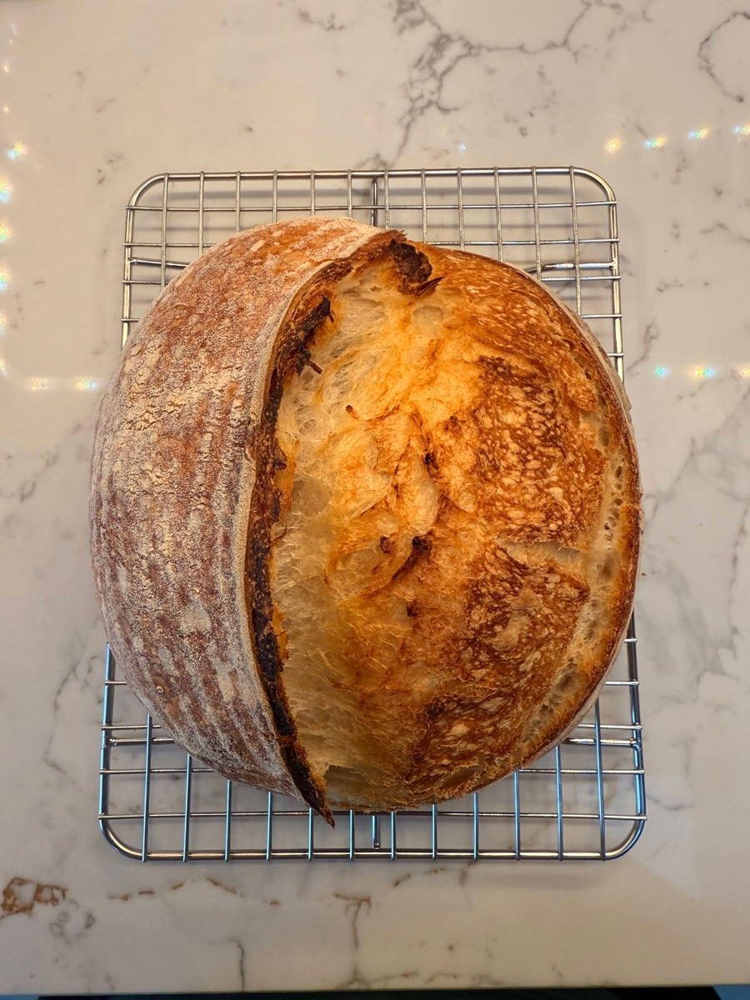

Introduction to Sourdough Bread
Sourdough uses wild yeast and time to create bread with incredible flavour and texture. No commercial yeast, just flour, water, salt, and patience.
Basic Loaf: My simple guide to foolproof Sourdough bread.
Let's be honest. You want to make bread that looks and tastes like it came from a bakery, but you don't want to turn your kitchen into a science lab or wake up at 4am. I get it. This method is real sourdough for real life. It fits around your job, your kids, and your sleep schedule. Simple steps, zero stress, great bread.
Who is this For?
This method is perfect for sourdough beginners, busy people or anyone previously scared off by complicated recipes. If you want amazing bread without stress, stick around!
Perfect for Absolute Beginners! 🥖
Think a sourdough loaf looks too hard? Our Easy Sourdough Focaccia is the perfect place to start. No shaping, no scoring, and it uses the exact same starter!
The Basic Loaf Approach
My approach is hands-off. We let the dough sit and do its thing while you get on with your day. Day 1 is a quick mix and some waiting. Day 2 is baking. That's it.